Work
Open Work- Content & CreativeContent strategy and production for Star Sports and JioStar.
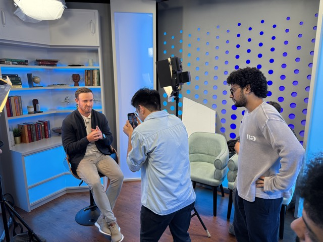
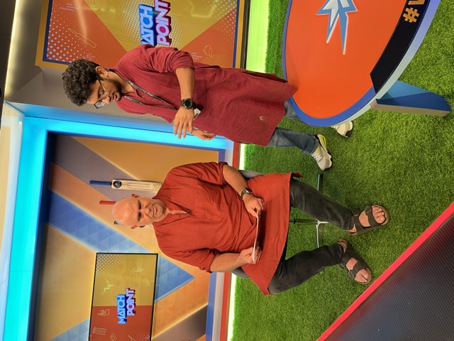
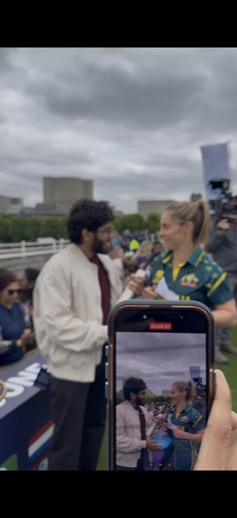
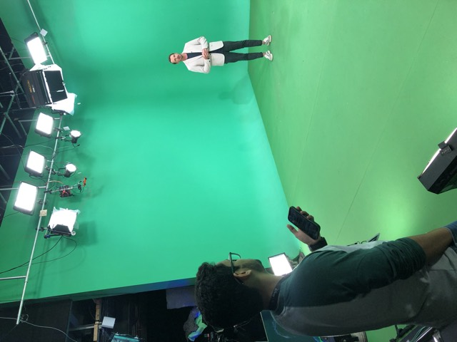
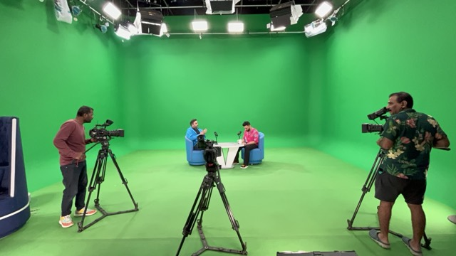
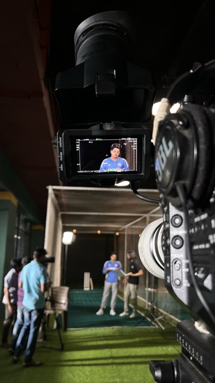
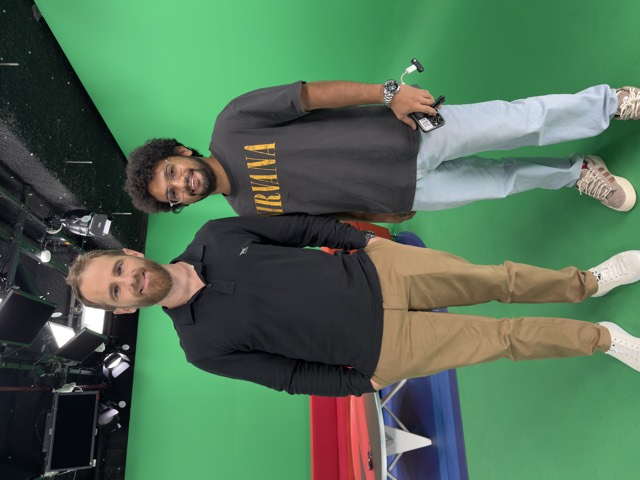
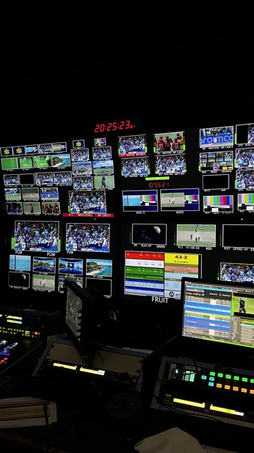
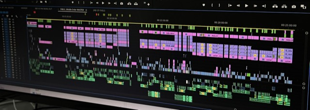
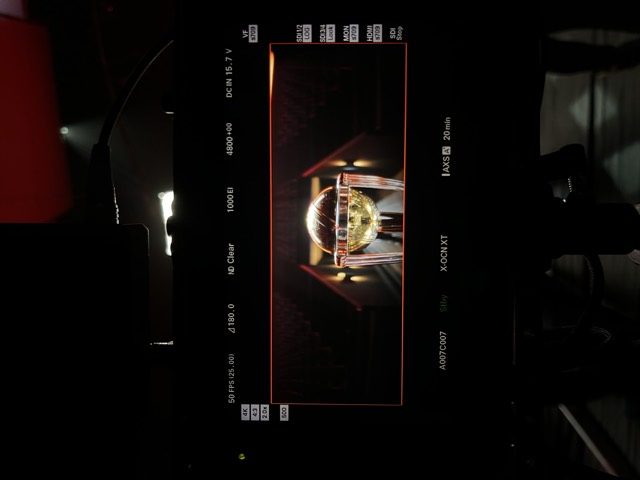
- Marketing & StrategyGo-to-market, partnerships and brand activations in London.
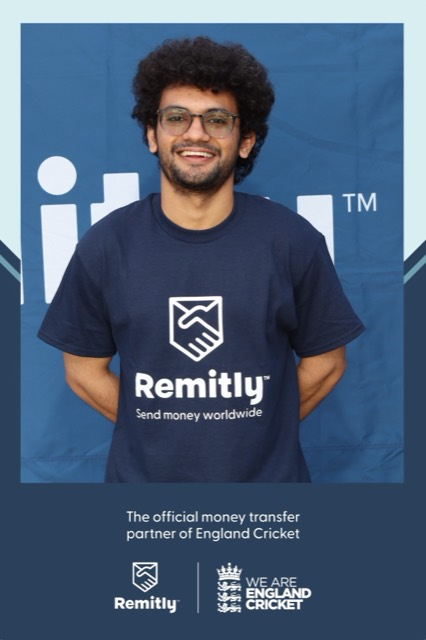
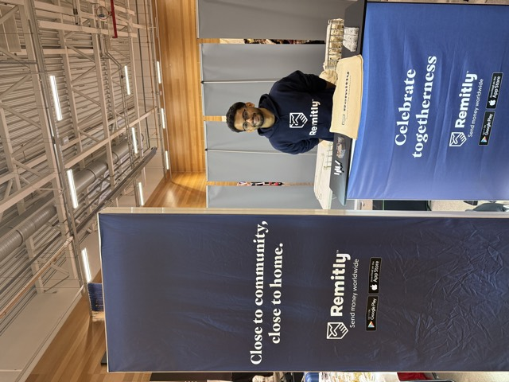
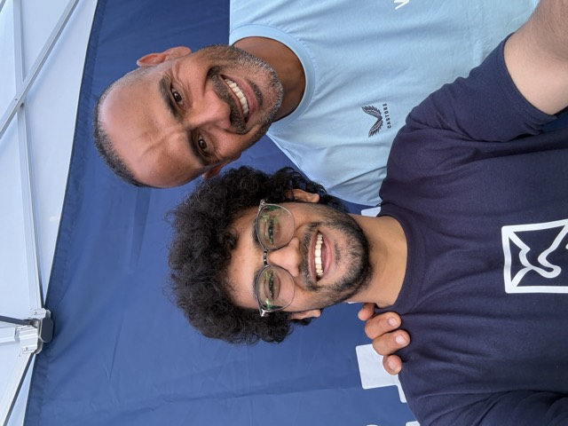
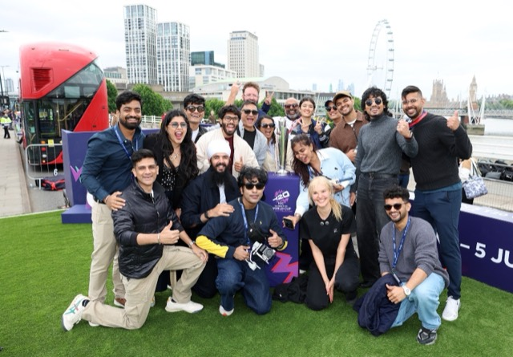
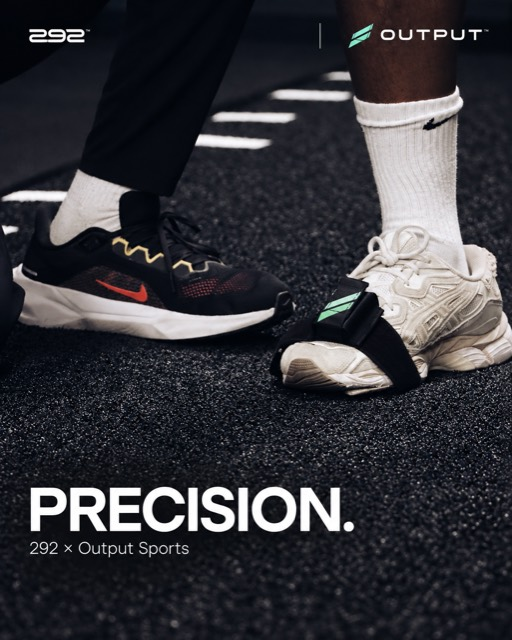

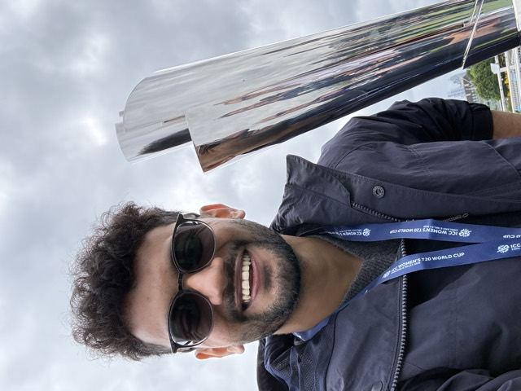
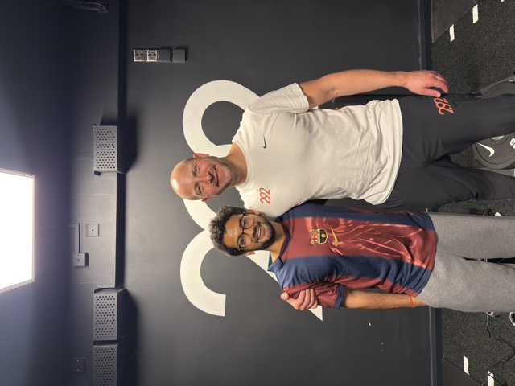
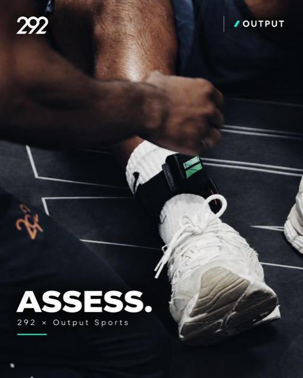

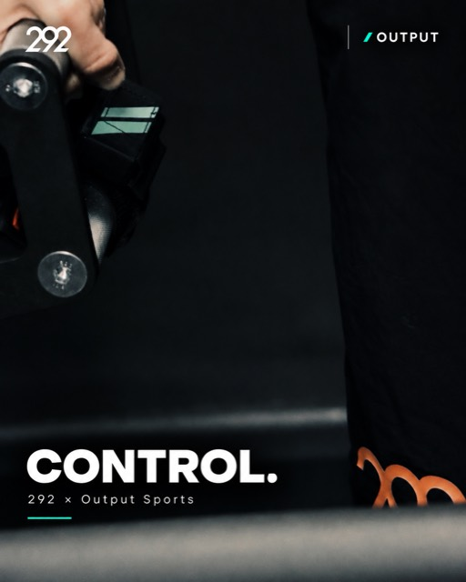
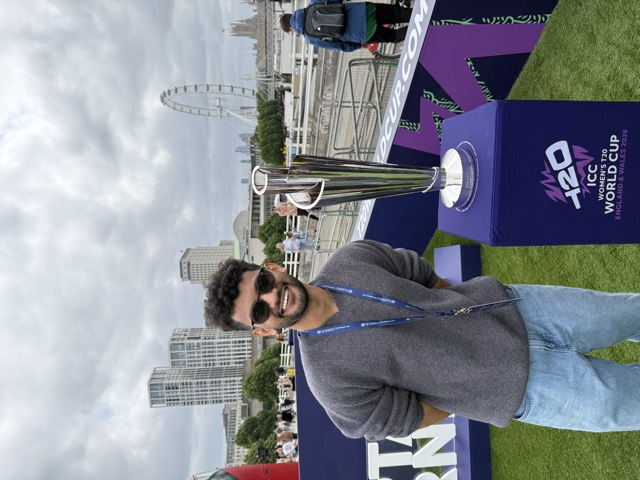
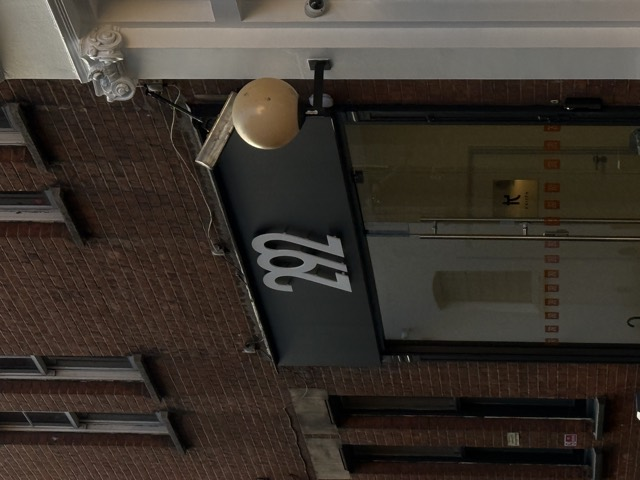


About
Open AboutFrom film sets in Mumbai to marketing in London.

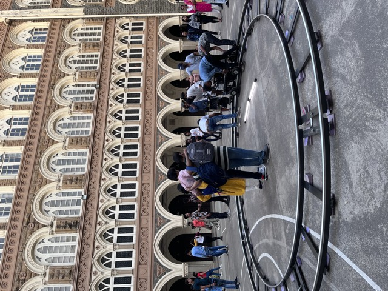


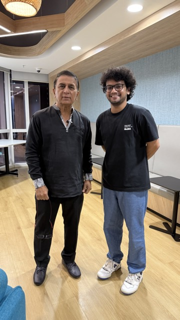
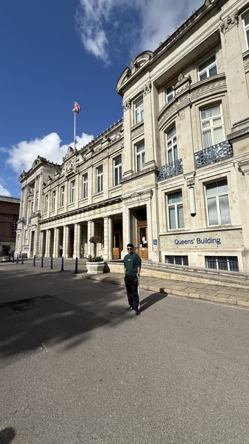
Contact
Open ContactLooking for full-time roles across content and marketing in sports, media, entertainment and FMCG. Based in London.